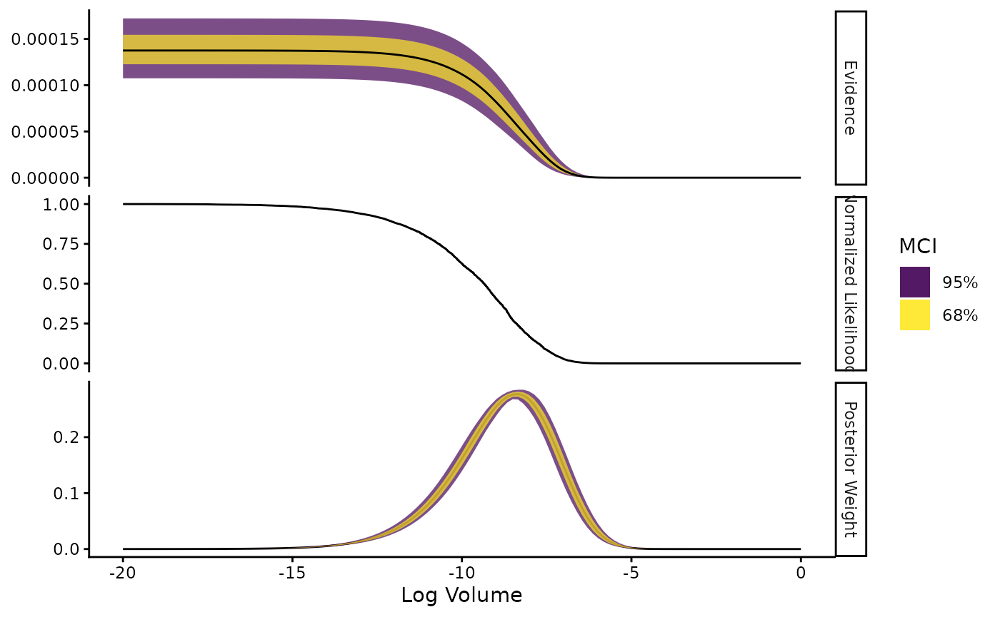

Quickstart: Nested Sampling with Ernest
Source:vignettes/nested-sampling-with-ernest.Rmd
nested-sampling-with-ernest.RmdNested Sampling with Ernest
This vignette provides a hands-on introduction to nested sampling
using the ernest package. You will learn how to:
- Understand the role of model evidence in Bayesian inference and why it is difficult to compute.
- Use prior transforms to define parameter spaces for nested sampling.
- Set up and run a nested sampling analysis in R with ernest.
- Inspect, summarise, and visualise results, including evidence and posterior samples.
Bayesian Model Evidence and Nested Sampling
In Bayesian inference, we use probabilities to represent our current beliefs about a model’s unobservable parameters. When we gather new data, we update these beliefs using Bayes’ theorem: where is the prior distribution, is the likelihood of a model given parameters and the data , and is the posterior distribution of the parameters after our beliefs have been updated.
The denominator is called the Bayesian evidence or marginal likelihood. In isolation, serves to normalise so that it is a well-conditioned probability distribution. If we reorganise Bayes’ theorem to isolate , we see that calculating a model’s evidence involves integrating over all possible values of : This allows us to use as a parameter-independent measure of a model’s overall plausibility given some data. When comparing two models, the ratio of their respective evidences (called the Bayes factor) shows how much more the data support one model over the other, which forms the foundation of Bayesian model selection.
For most data and models, the evidence integral cannot be solved directly. Instead, researchers rely on estimation methods. Nested sampling (NS), introduced by Skilling (2006), is designed to estimate even when the posterior distribution is poorly conditioned (e.g., if has multiple peaks or discontinuities along values of ). It accomplishes this by dividing the prior space into many small nested shells or volumes. These shells are defined by the smallest likelihood value they contain, such that the volume of the cells containing the smallest value is given by If we build many across different values of , we can approximate the original multidimensional integral across the parameter space of with a one-dimensional integral over the sequence of : where exists. This requires us to estimate the volume of each shell , which we can do (Speagle 2020).
NS generates this sequence of shells by generating a set number of live points within the prior space, then replacing the worst of these points with a new point from with an additional likelihood constraint. This lets NS handle complicated likelihood surfaces, including those with multiple peaks or sharp transitions. In addition, NS naturally provides stopping rules, meaning the algorithm knows when it has gathered enough information to accurately estimate the evidence. As a bonus, the same samples used for evidence estimation can be repurposed to estimate the posterior distribution.
Nested Sampling with ernest
Here, we use an example from the dynesty documentation to demonstrate how to use ernest to design, perform, and report nested sampling runs.
Defining Priors
Nested sampling operates by drawing samples from the prior, but for efficiency, ernest represents the prior space as points in a [0, 1)-unit hypercube. A prior transformation function must be specified to translate points from the hypercube into valid .
In ernest, you define priors using functions like
create_uniform_prior() or by supplying a custom
transformation to create_prior(). In addition to organising
the prior into an object that ernest can use during NS, these functions
also perform checks to help ensure your prior transformation function is
size- and type-stable.
Example: Uniform Prior
In many cases, it is sufficient to define a prior with independently distributed uniform or normal distributions. Ernest provides convenience functions to build such priors with efficient prior transformation functions.
The following defines a uniform prior over for each parameter in 3D space:
prior <- create_uniform_prior(
lower = -10,
upper = 10,
varnames = c("x", "y", "z")
)
prior
#> Prior distribution <uniform_prior/ernest_prior>
#>
#> Names: "x", "y", and "z"
#> Bounds:
#> → Lower: -10, -10, and -10
#> → Upper: 10, 10, and 10Example: Custom/Conditional Prior
For more complex priors, you must provide a custom function. In the case of prior spaces with independent marginals, this amounts to specifying a function that applies the inverse CDF for each component of .
Consider the following prior space with five dimensions: The first two are drawn from a bivariate Normal distribution, the third is drawn from a Beta distribution, the fourth from a Gamma distribution, and the fifth from a truncated normal distribution.
five_dim <- function(u) {
x <- double(5)
# MVN(mu = c(5, 2), Sigma = [5, 4; 4, 5])
t <- qnorm(u[1:2])
sigma_sqrt <- matrix(c(2, 1, 1, 2), nrow = 2, byrow = TRUE)
mu <- c(5, 2)
x[1:2] <- drop(t %*% sigma_sqrt) + c(5, 2)
# Beta
x[3] <- qbeta(u[3], shape1 = 2.31, shape2 = 0.627)
# Gamma
x[4] <- qgamma(u[4], shape = 5)
# Truncated Normal
x[5] <- qtruncnorm(u[5], a = 2, b = 10, mean = 5, sd = 2)
return(x)
}
create_prior(
fn = five_dim,
.n_dim = 5,
.varnames = c("MVN", "MVN", "Beta", "Gamma", "Norm[2, 10]")
)
#> New names:
#> • `MVN` -> `MVN...1`
#> • `MVN` -> `MVN...2`
#> Prior distribution <ernest_prior>
#>
#> Names: "MVN...1", "MVN...2", "Beta", "Gamma", and "Norm[2, 10]"For more sophisticated priors (such as those for hierarchical models), you will need to build more involved prior transformation functions.
hierarchical <- function(u) {
# mu ~ N(5, 1)
mu <- qnorm(u[1], mean = 5, sd = 1)
# log10(sd) ~ U[-1, 1]
sd <- 10 ^ qunif(u[2], -1, 1)
# x ~ N(mu, sd^2)
x <- qnorm(u[3], mean = mu, sd = sd)
c(mu, sd, x)
}
create_prior(
fn = hierarchical,
.n_dim = 3,
.varnames = c("mu", "sigma", "x"),
.lower = c(-Inf, 0, -Inf)
)
#> Prior distribution <ernest_prior>
#>
#> Names: "mu", "sigma", and "x"
#> Bounds:
#> → Lower: -Inf, 0, and -Inf
#> → Upper: Inf, Inf, and InfLikelihood Function
Model log-likelihoods are represented by R functions. These functions
are expected to return a single scalar value for each possible
within the prior space. If, for any reason,
contains regions where
is invalid, ensure your likelihood function returns
-Inf.
In this example, we use create_likelihood() to assign
parameters to the LaplaceDemon density function for a
multivariate normal distribution:
mu <- c(0, 0, 0)
C <- diag(1, 3)
C[C == 0] <- 0.95
loglike <- create_likelihood(
rowwise_fn = dmvn,
mu = !!mu,
Sigma = !!C,
log = TRUE
)Setting Up and Running the Sampler
Initialise the sampler with your likelihood and prior. The number of
live points (n_points) controls the resolution (more points
= higher accuracy, slower run).
sampler <- ernest_sampler(
log_lik = loglike,
prior = prior,
n_points = 500
)
sampler
#> Nested sampling specification <ernest_sampler>
#> No. Points: 500
#>
#> ── Sampling Method
#> • Random Walk in Unit Cube LRPS <rwmh_cube/ernest_lrps>
#> • No. Dimensions: 3
#> • No. Calls Since Update: 0
#> • No. Accepted Since Update: 0
#> • Current Step Size: 1Run nested sampling for a fixed number of iterations or until the evidence estimate converges:
run <- generate(sampler, max_iterations = 2000, seed = 123, show_progress = FALSE)
#> ✔ Creating new live points.
#> ✔ `max_iterations` reached (2000).
run
#> Nested sampling run <ernest_run/ernest_sampler>
#> No. Points: 500
#>
#> ── Sampling Method
#> • Random Walk in Unit Cube LRPS <rwmh_cube/ernest_lrps>
#> • No. Dimensions: 3
#> • No. Calls Since Update: 0
#> • No. Accepted Since Update: 0
#> • Current Step Size: 0.0811
#>
#> ── Results
#> No. Iterations: 2000
#> No. Calls: 35651
#> Log. Evidence: -9.3077 (± 1.7635)generate produces an ernest_run object that
can be saved to disk. You can continue a run by calling
generate on a previously created
ernest_run:
tmp_name <- tempfile("ernest_run.rds")
saveRDS(run, tmp_name)
continued_run <- readRDS(tmp_name)
run2 <- generate(continued_run, min_logz = 0.01, show_progress = FALSE)
#> ✔ Restoring live points from a previous run.
#> ✔ `min_logz` reached (0.01 < 0.01).
run2
#> Nested sampling run <ernest_run/ernest_sampler>
#> No. Points: 500
#>
#> ── Sampling Method
#> • Random Walk in Unit Cube LRPS <rwmh_cube/ernest_lrps>
#> • No. Dimensions: 3
#> • No. Calls Since Update: 0
#> • No. Accepted Since Update: 0
#> • Current Step Size: 0.004
#>
#> ── Results
#> No. Iterations: 6716
#> No. Calls: 153551
#> Log. Evidence: -9.1101 (± 0.1254)Inspecting and Summarising Results
The result object has a summary method for viewing
evidence estimates, posterior samples, and diagnostics as a tidy
tibble:
summary(run2)
#>
#> ── Nested sampling results <ernest_run> ────────────────────────────────────────
#> No. Points: 500
#> No. Iterations: 6716
#> No. Lik. Calls: 153551
#> Log. Evidence: -9.1101 (± 0.1254)
summary(run2)$run
#> # A tibble: 7,216 × 7
#> call log_lik log_volume log_weight log_evidence log_evidence_err information
#> <int> <dbl> <dbl> <dbl> <dbl> <dbl> <dbl>
#> 1 1 -2650. -0.002 -2647. -2656. 0 0
#> 2 2 -2278. -0.004 -2275. -2284. 0 0
#> 3 3 -2233. -0.006 -2230. -2239. 0 0
#> 4 4 -2013. -0.008 -2011. -2020. 0 0
#> 5 5 -2008. -0.01 -2006. -2015. 0 0
#> 6 6 -1968. -0.012 -1965. -1975. 0 0
#> 7 7 -1927. -0.014 -1924. -1933. 0 0
#> 8 8 -1905. -0.016 -1902. -1911. 0 0
#> 9 9 -1871. -0.018 -1868. -1877. 0 0
#> 10 10 -1832. -0.02 -1829. -1838. 0 0
#> # ℹ 7,206 more rowsThe posterior package offers methods for inspecting the
points generated during a run.
You can view the importance weight of each point and reweight the sample to estimate the posterior distribution:
weights(unweighted_post) |> head()
#> [1] 0 0 0 0 0 0
weighted_post <- unweighted_post |>
resample_draws()
posterior::summarise_draws(weighted_post)
#> # A tibble: 3 × 10
#> variable mean median sd mad q5 q95 rhat ess_bulk ess_tail
#> <chr> <dbl> <dbl> <dbl> <dbl> <dbl> <dbl> <dbl> <dbl> <dbl>
#> 1 x 0.0252 0.0178 0.958 0.957 -1.51 1.61 1.16 2268. 14.8
#> 2 y 0.0186 -0.00264 0.961 0.938 -1.52 1.59 1.16 2361. 13.7
#> 3 z 0.0262 0.00269 0.959 0.977 -1.53 1.58 1.16 2279. 14.1
Uncertainty and Resampling
You can simulate the uncertainty of an NS run by generating random
draws of the log-volume estimate at each iteration (see Skilling (2006) for the mathematical rationale
of the log-volume estimates). You can further visualise this uncertainty
with the plot method.
calc_sim <- calculate(run2, ndraws = 500)
calc_sim
#> Nested sampling estimates <ernest_estimate>
#> No. of Simulated Draws: 500
#> Log. Volume: -20 ± 1.4
#> Log. Evidence: -9.1 ± 0.12
#> # A tibble: 7,216 × 4
#> log_lik log_volume log_weight log_evidence
#> <rvar[1d]> <rvar[1d]> <rvar[1d]> <rvar[1d]>
#> 1 -2650 ± NA -0.0019 ± 0.0019 -2656 ± 0.78 -2656 ± 0.78
#> 2 -2278 ± NA -0.0039 ± 0.0026 -2284 ± 0.81 -2284 ± 0.81
#> 3 -2233 ± NA -0.0059 ± 0.0034 -2239 ± 0.83 -2239 ± 0.83
#> 4 -2013 ± NA -0.0079 ± 0.0039 -2020 ± 0.76 -2020 ± 0.76
#> 5 -2008 ± NA -0.0098 ± 0.0044 -2015 ± 0.74 -2015 ± 0.73
#> 6 -1968 ± NA -0.0118 ± 0.0047 -1975 ± 0.78 -1975 ± 0.78
#> 7 -1927 ± NA -0.0138 ± 0.0052 -1933 ± 0.84 -1933 ± 0.84
#> 8 -1905 ± NA -0.0158 ± 0.0056 -1911 ± 0.84 -1911 ± 0.84
#> 9 -1871 ± NA -0.0179 ± 0.0060 -1877 ± 0.76 -1877 ± 0.76
#> 10 -1832 ± NA -0.0199 ± 0.0063 -1838 ± 0.77 -1838 ± 0.77
#> # ℹ 7,206 more rows
plot(calc_sim)
For more details on nested sampling, please refer to ernest’s documentation or the following references: